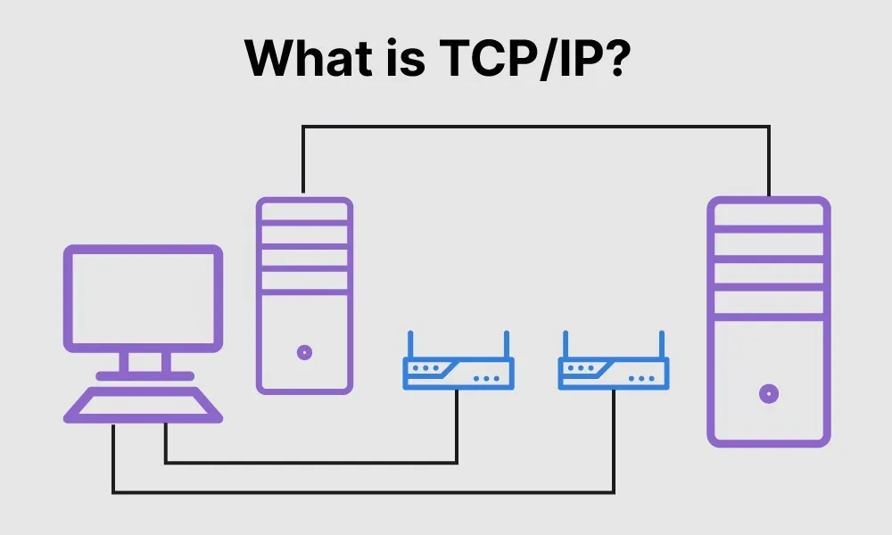
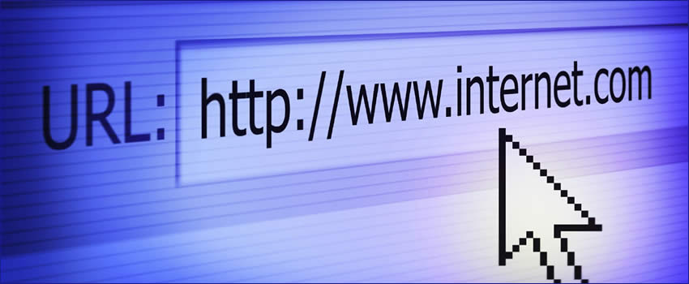

a. Vad avses med termerna klient och server?
En klient i IT-språk är en beställare och mottagare av tjänster eller program i webben. Det är klienten som söker upp sidor på internet och servern är den som tar emot beställningen och i sin tur öppnar upp webbsidor, tjänster mm, beroende på vad klienten söker..

b. Beskriv vad var och en av protokollen TCP och IP gör på sändande och mottagande sida.
TCP (Transmission Control Protocol) är ett informationspaket som skickar meddelanden och har en mottagare. TCP delar upp meddelandet som skickas i nummer som sedan skickas vidare till IP. Mottagaren tar hand om att sätta samman paket till olika meddelanden och det skickas sen till program som den är till för.
IP (Internet Protocol) IP har en huvuduppgift vilket är adressering och har också en sändare och en mottagare. Den skickar IP-adress och skickar tillbaka de paket som inte har bekräftats. Efter det tas paketet emot och skickas till TCP, som då bekräftar paketet.

c. Beskriv de delar som följande url består av:
http://webbteknik.abc.se:8082/kurs1/uppg/u1.html#fragor
- - (http://) - ett protokoll
- - (Webbteknik) - underdomän
- - (.abc.se) - domän
- - (:8082/kurs1/uppg/u1.html) - sökväg
- - (#fragor) - fragment